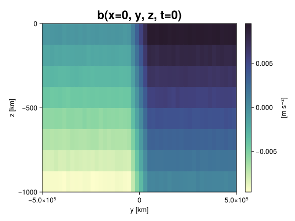
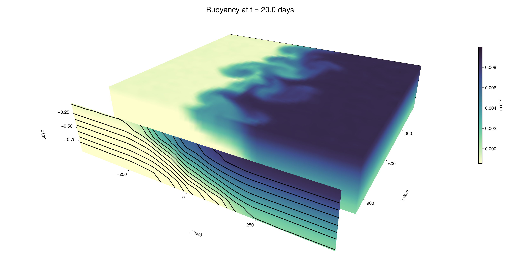

Baroclinic adjustment
In this example, we simulate the evolution and equilibration of a baroclinically unstable front.
Install dependencies
First let's make sure we have all required packages installed.
using Pkg
pkg"add Oceananigans, CairoMakie"using Oceananigans
using Oceananigans.UnitsGrid
We use a three-dimensional channel that is periodic in the x direction:
Lx = 1000kilometers # east-west extent [m]
Ly = 1000kilometers # north-south extent [m]
Lz = 1kilometers # depth [m]
grid = RectilinearGrid(size = (48, 48, 8),
x = (0, Lx),
y = (-Ly/2, Ly/2),
z = (-Lz, 0),
topology = (Periodic, Bounded, Bounded))48×48×8 RectilinearGrid{Float64, Periodic, Bounded, Bounded} on CPU with 3×3×3 halo
├── Periodic x ∈ [0.0, 1.0e6) regularly spaced with Δx=20833.3
├── Bounded y ∈ [-500000.0, 500000.0] regularly spaced with Δy=20833.3
└── Bounded z ∈ [-1000.0, 0.0] regularly spaced with Δz=125.0Model
We built a HydrostaticFreeSurfaceModel with an ImplicitFreeSurface solver. Regarding Coriolis, we use a beta-plane centered at 45° South.
model = HydrostaticFreeSurfaceModel(; grid,
coriolis = BetaPlane(latitude = -45),
buoyancy = BuoyancyTracer(),
tracers = :b,
momentum_advection = WENO(),
tracer_advection = WENO())HydrostaticFreeSurfaceModel{CPU, RectilinearGrid}(time = 0 seconds, iteration = 0)
├── grid: 48×48×8 RectilinearGrid{Float64, Periodic, Bounded, Bounded} on CPU with 3×3×3 halo
├── timestepper: QuasiAdamsBashforth2TimeStepper
├── tracers: b
├── closure: Nothing
├── buoyancy: BuoyancyTracer with ĝ = NegativeZDirection()
├── free surface: ImplicitFreeSurface with gravitational acceleration 9.80665 m s⁻²
│ └── solver: FFTImplicitFreeSurfaceSolver
├── advection scheme:
│ ├── momentum: WENO reconstruction order 5
│ └── b: WENO reconstruction order 5
└── coriolis: BetaPlane{Float64}We start our simulation from rest with a baroclinically unstable buoyancy distribution. We use ramp(y, Δy), defined below, to specify a front with width Δy and horizontal buoyancy gradient M². We impose the front on top of a vertical buoyancy gradient N² and a bit of noise.
"""
ramp(y, Δy)
Linear ramp from 0 to 1 between -Δy/2 and +Δy/2.
For example:
```
y < -Δy/2 => ramp = 0
-Δy/2 < y < -Δy/2 => ramp = y / Δy
y > Δy/2 => ramp = 1
```
"""
ramp(y, Δy) = min(max(0, y/Δy + 1/2), 1)
N² = 1e-5 # [s⁻²] buoyancy frequency / stratification
M² = 1e-7 # [s⁻²] horizontal buoyancy gradient
Δy = 100kilometers # width of the region of the front
Δb = Δy * M² # buoyancy jump associated with the front
ϵb = 1e-2 * Δb # noise amplitude
bᵢ(x, y, z) = N² * z + Δb * ramp(y, Δy) + ϵb * randn()
set!(model, b=bᵢ)Let's visualize the initial buoyancy distribution.
using CairoMakie
# Build coordinates with units of kilometers
x, y, z = 1e-3 .* nodes(grid, (Center(), Center(), Center()))
b = model.tracers.b
fig, ax, hm = heatmap(view(b, 1, :, :),
colormap = :deep,
axis = (xlabel = "y [km]",
ylabel = "z [km]",
title = "b(x=0, y, z, t=0)",
titlesize = 24))
Colorbar(fig[1, 2], hm, label = "[m s⁻²]")
fig
Simulation
Now let's build a Simulation.
simulation = Simulation(model, Δt=20minutes, stop_time=20days)Simulation of HydrostaticFreeSurfaceModel{CPU, RectilinearGrid}(time = 0 seconds, iteration = 0)
├── Next time step: 20 minutes
├── Elapsed wall time: 0 seconds
├── Wall time per iteration: NaN days
├── Stop time: 20 days
├── Stop iteration : Inf
├── Wall time limit: Inf
├── Callbacks: OrderedDict with 4 entries:
│ ├── stop_time_exceeded => Callback of stop_time_exceeded on IterationInterval(1)
│ ├── stop_iteration_exceeded => Callback of stop_iteration_exceeded on IterationInterval(1)
│ ├── wall_time_limit_exceeded => Callback of wall_time_limit_exceeded on IterationInterval(1)
│ └── nan_checker => Callback of NaNChecker for u on IterationInterval(100)
├── Output writers: OrderedDict with no entries
└── Diagnostics: OrderedDict with no entriesWe add a TimeStepWizard callback to adapt the simulation's time-step,
conjure_time_step_wizard!(simulation, IterationInterval(20), cfl=0.2, max_Δt=20minutes)Also, we add a callback to print a message about how the simulation is going,
using Printf
wall_clock = Ref(time_ns())
function print_progress(sim)
u, v, w = model.velocities
progress = 100 * (time(sim) / sim.stop_time)
elapsed = (time_ns() - wall_clock[]) / 1e9
@printf("[%05.2f%%] i: %d, t: %s, wall time: %s, max(u): (%6.3e, %6.3e, %6.3e) m/s, next Δt: %s\n",
progress, iteration(sim), prettytime(sim), prettytime(elapsed),
maximum(abs, u), maximum(abs, v), maximum(abs, w), prettytime(sim.Δt))
wall_clock[] = time_ns()
return nothing
end
add_callback!(simulation, print_progress, IterationInterval(100))Diagnostics/Output
Here, we save the buoyancy, $b$, at the edges of our domain as well as the zonal ($x$) average of buoyancy.
u, v, w = model.velocities
ζ = ∂x(v) - ∂y(u)
B = Average(b, dims=1)
U = Average(u, dims=1)
V = Average(v, dims=1)
filename = "baroclinic_adjustment"
save_fields_interval = 0.5day
slicers = (east = (grid.Nx, :, :),
north = (:, grid.Ny, :),
bottom = (:, :, 1),
top = (:, :, grid.Nz))
for side in keys(slicers)
indices = slicers[side]
simulation.output_writers[side] = JLD2OutputWriter(model, (; b, ζ);
filename = filename * "_$(side)_slice",
schedule = TimeInterval(save_fields_interval),
overwrite_existing = true,
indices)
end
simulation.output_writers[:zonal] = JLD2OutputWriter(model, (; b=B, u=U, v=V);
filename = filename * "_zonal_average",
schedule = TimeInterval(save_fields_interval),
overwrite_existing = true)JLD2OutputWriter scheduled on TimeInterval(12 hours):
├── filepath: ./baroclinic_adjustment_zonal_average.jld2
├── 3 outputs: (b, u, v)
├── array type: Array{Float64}
├── including: [:grid, :coriolis, :buoyancy, :closure]
├── file_splitting: NoFileSplitting
└── file size: 30.7 KiBNow we're ready to run.
@info "Running the simulation..."
run!(simulation)
@info "Simulation completed in " * prettytime(simulation.run_wall_time)[ Info: Running the simulation...
[ Info: Initializing simulation...
[00.00%] i: 0, t: 0 seconds, wall time: 27.204 seconds, max(u): (0.000e+00, 0.000e+00, 0.000e+00) m/s, next Δt: 20 minutes
[ Info: ... simulation initialization complete (31.358 seconds)
[ Info: Executing initial time step...
[ Info: ... initial time step complete (25.120 seconds).
[06.94%] i: 100, t: 1.389 days, wall time: 45.797 seconds, max(u): (1.240e-01, 1.099e-01, 1.501e-03) m/s, next Δt: 20 minutes
[13.89%] i: 200, t: 2.778 days, wall time: 1.129 seconds, max(u): (2.126e-01, 1.647e-01, 1.833e-03) m/s, next Δt: 20 minutes
[20.83%] i: 300, t: 4.167 days, wall time: 1.240 seconds, max(u): (2.930e-01, 2.240e-01, 1.703e-03) m/s, next Δt: 20 minutes
[27.78%] i: 400, t: 5.556 days, wall time: 1.410 seconds, max(u): (3.872e-01, 3.045e-01, 1.784e-03) m/s, next Δt: 20 minutes
[34.72%] i: 500, t: 6.944 days, wall time: 1.565 seconds, max(u): (4.599e-01, 4.725e-01, 1.980e-03) m/s, next Δt: 20 minutes
[41.67%] i: 600, t: 8.333 days, wall time: 1.342 seconds, max(u): (5.735e-01, 7.181e-01, 2.590e-03) m/s, next Δt: 20 minutes
[48.61%] i: 700, t: 9.722 days, wall time: 1.238 seconds, max(u): (7.762e-01, 1.080e+00, 3.520e-03) m/s, next Δt: 20 minutes
[55.56%] i: 800, t: 11.111 days, wall time: 1.197 seconds, max(u): (1.216e+00, 1.233e+00, 4.373e-03) m/s, next Δt: 20 minutes
[62.50%] i: 900, t: 12.500 days, wall time: 1.149 seconds, max(u): (1.433e+00, 1.354e+00, 5.071e-03) m/s, next Δt: 20 minutes
[69.44%] i: 1000, t: 13.889 days, wall time: 1.307 seconds, max(u): (1.458e+00, 1.116e+00, 3.700e-03) m/s, next Δt: 20 minutes
[76.39%] i: 1100, t: 15.278 days, wall time: 1.240 seconds, max(u): (1.418e+00, 1.230e+00, 3.641e-03) m/s, next Δt: 20 minutes
[83.33%] i: 1200, t: 16.667 days, wall time: 1.111 seconds, max(u): (1.503e+00, 1.090e+00, 3.198e-03) m/s, next Δt: 20 minutes
[90.28%] i: 1300, t: 18.056 days, wall time: 1.121 seconds, max(u): (1.311e+00, 1.036e+00, 2.734e-03) m/s, next Δt: 20 minutes
[97.22%] i: 1400, t: 19.444 days, wall time: 1.096 seconds, max(u): (1.238e+00, 1.113e+00, 3.051e-03) m/s, next Δt: 20 minutes
[ Info: Simulation is stopping after running for 1.303 minutes.
[ Info: Simulation time 20 days equals or exceeds stop time 20 days.
[ Info: Simulation completed in 1.304 minutes
Visualization
All that's left is to make a pretty movie. Actually, we make two visualizations here. First, we illustrate how to make a 3D visualization with Makie's Axis3 and Makie.surface. Then we make a movie in 2D. We use CairoMakie in this example, but note that using GLMakie is more convenient on a system with OpenGL, as figures will be displayed on the screen.
using CairoMakieThree-dimensional visualization
We load the saved buoyancy output on the top, north, and east surface as FieldTimeSerieses.
filename = "baroclinic_adjustment"
sides = keys(slicers)
slice_filenames = NamedTuple(side => filename * "_$(side)_slice.jld2" for side in sides)
b_timeserieses = (east = FieldTimeSeries(slice_filenames.east, "b"),
north = FieldTimeSeries(slice_filenames.north, "b"),
top = FieldTimeSeries(slice_filenames.top, "b"))
B_timeseries = FieldTimeSeries(filename * "_zonal_average.jld2", "b")
times = B_timeseries.times
grid = B_timeseries.grid48×48×8 RectilinearGrid{Float64, Periodic, Bounded, Bounded} on CPU with 3×3×3 halo
├── Periodic x ∈ [0.0, 1.0e6) regularly spaced with Δx=20833.3
├── Bounded y ∈ [-500000.0, 500000.0] regularly spaced with Δy=20833.3
└── Bounded z ∈ [-1000.0, 0.0] regularly spaced with Δz=125.0We build the coordinates. We rescale horizontal coordinates to kilometers.
xb, yb, zb = nodes(b_timeserieses.east)
xb = xb ./ 1e3 # convert m -> km
yb = yb ./ 1e3 # convert m -> km
Nx, Ny, Nz = size(grid)
x_xz = repeat(x, 1, Nz)
y_xz_north = y[end] * ones(Nx, Nz)
z_xz = repeat(reshape(z, 1, Nz), Nx, 1)
x_yz_east = x[end] * ones(Ny, Nz)
y_yz = repeat(y, 1, Nz)
z_yz = repeat(reshape(z, 1, Nz), grid.Ny, 1)
x_xy = x
y_xy = y
z_xy_top = z[end] * ones(grid.Nx, grid.Ny)Then we create a 3D axis. We use zonal_slice_displacement to control where the plot of the instantaneous zonal average flow is located.
fig = Figure(size = (1600, 800))
zonal_slice_displacement = 1.2
ax = Axis3(fig[2, 1],
aspect=(1, 1, 1/5),
xlabel = "x (km)",
ylabel = "y (km)",
zlabel = "z (m)",
xlabeloffset = 100,
ylabeloffset = 100,
zlabeloffset = 100,
limits = ((x[1], zonal_slice_displacement * x[end]), (y[1], y[end]), (z[1], z[end])),
elevation = 0.45,
azimuth = 6.8,
xspinesvisible = false,
zgridvisible = false,
protrusions = 40,
perspectiveness = 0.7)Axis3()We use data from the final savepoint for the 3D plot. Note that this plot can easily be animated by using Makie's Observable. To dive into Observables, check out Makie.jl's Documentation.
n = length(times)41Now let's make a 3D plot of the buoyancy and in front of it we'll use the zonally-averaged output to plot the instantaneous zonal-average of the buoyancy.
b_slices = (east = interior(b_timeserieses.east[n], 1, :, :),
north = interior(b_timeserieses.north[n], :, 1, :),
top = interior(b_timeserieses.top[n], :, :, 1))
# Zonally-averaged buoyancy
B = interior(B_timeseries[n], 1, :, :)
clims = 1.1 .* extrema(b_timeserieses.top[n][:])
kwargs = (colorrange=clims, colormap=:deep, shading=NoShading)
surface!(ax, x_yz_east, y_yz, z_yz; color = b_slices.east, kwargs...)
surface!(ax, x_xz, y_xz_north, z_xz; color = b_slices.north, kwargs...)
surface!(ax, x_xy, y_xy, z_xy_top; color = b_slices.top, kwargs...)
sf = surface!(ax, zonal_slice_displacement .* x_yz_east, y_yz, z_yz; color = B, kwargs...)
contour!(ax, y, z, B; transformation = (:yz, zonal_slice_displacement * x[end]),
levels = 15, linewidth = 2, color = :black)
Colorbar(fig[2, 2], sf, label = "m s⁻²", height = Relative(0.4), tellheight=false)
title = "Buoyancy at t = " * string(round(times[n] / day, digits=1)) * " days"
fig[1, 1:2] = Label(fig, title; fontsize = 24, tellwidth = false, padding = (0, 0, -120, 0))
rowgap!(fig.layout, 1, Relative(-0.2))
colgap!(fig.layout, 1, Relative(-0.1))
save("baroclinic_adjustment_3d.png", fig)
Two-dimensional movie
We make a 2D movie that shows buoyancy $b$ and vertical vorticity $ζ$ at the surface, as well as the zonally-averaged zonal and meridional velocities $U$ and $V$ in the $(y, z)$ plane. First we load the FieldTimeSeries and extract the additional coordinates we'll need for plotting
ζ_timeseries = FieldTimeSeries(slice_filenames.top, "ζ")
U_timeseries = FieldTimeSeries(filename * "_zonal_average.jld2", "u")
B_timeseries = FieldTimeSeries(filename * "_zonal_average.jld2", "b")
V_timeseries = FieldTimeSeries(filename * "_zonal_average.jld2", "v")
xζ, yζ, zζ = nodes(ζ_timeseries)
yv = ynodes(V_timeseries)
xζ = xζ ./ 1e3 # convert m -> km
yζ = yζ ./ 1e3 # convert m -> km
yv = yv ./ 1e3 # convert m -> km49-element Vector{Float64}:
-500.0
-479.1666666666667
-458.3333333333333
-437.5
-416.6666666666667
-395.8333333333333
-375.0
-354.1666666666667
-333.3333333333333
-312.5
-291.6666666666667
-270.8333333333333
-250.0
-229.16666666666666
-208.33333333333334
-187.5
-166.66666666666666
-145.83333333333334
-125.0
-104.16666666666667
-83.33333333333333
-62.5
-41.666666666666664
-20.833333333333332
0.0
20.833333333333332
41.666666666666664
62.5
83.33333333333333
104.16666666666667
125.0
145.83333333333334
166.66666666666666
187.5
208.33333333333334
229.16666666666666
250.0
270.8333333333333
291.6666666666667
312.5
333.3333333333333
354.1666666666667
375.0
395.8333333333333
416.6666666666667
437.5
458.3333333333333
479.1666666666667
500.0Next, we set up a plot with 4 panels. The top panels are large and square, while the bottom panels get a reduced aspect ratio through rowsize!.
set_theme!(Theme(fontsize=24))
fig = Figure(size=(1800, 1000))
axb = Axis(fig[1, 2], xlabel="x (km)", ylabel="y (km)", aspect=1)
axζ = Axis(fig[1, 3], xlabel="x (km)", ylabel="y (km)", aspect=1, yaxisposition=:right)
axu = Axis(fig[2, 2], xlabel="y (km)", ylabel="z (m)")
axv = Axis(fig[2, 3], xlabel="y (km)", ylabel="z (m)", yaxisposition=:right)
rowsize!(fig.layout, 2, Relative(0.3))To prepare a plot for animation, we index the timeseries with an Observable,
n = Observable(1)
b_top = @lift interior(b_timeserieses.top[$n], :, :, 1)
ζ_top = @lift interior(ζ_timeseries[$n], :, :, 1)
U = @lift interior(U_timeseries[$n], 1, :, :)
V = @lift interior(V_timeseries[$n], 1, :, :)
B = @lift interior(B_timeseries[$n], 1, :, :)Observable([-0.009388511930560782 -0.008135323223398092 -0.006889230447419022 -0.005649183079064442 -0.004380553112731752 -0.0031332877951702983 -0.0018750806779561432 -0.0006175174057081969; -0.009355273264760112 -0.008123168036582444 -0.006869130621373252 -0.005623056661612054 -0.004368296976931766 -0.003109542327169592 -0.001860256601777619 -0.0006394436312630163; -0.00938144927909315 -0.00810061067980315 -0.006891686179481851 -0.005632564385684637 -0.004390644386373053 -0.003126495389874418 -0.0018728818656134582 -0.0006218367977779937; -0.009372184707185519 -0.008117619726709458 -0.006853142830384847 -0.005615513036460281 -0.004412532526730792 -0.0031166433052083665 -0.0018797020924893664 -0.0006209546504344451; -0.009369356154991538 -0.008125860854700183 -0.00688986000967793 -0.005626782219202396 -0.0043757113060805585 -0.003115816564180122 -0.0018332576725423606 -0.000603910701118305; -0.009396651115011674 -0.008150141430324795 -0.006861350988266316 -0.005633831572223133 -0.004373358183567728 -0.0031143151033990926 -0.0018763787957996575 -0.0006451799443344328; -0.009355327320877106 -0.008131789239610788 -0.0068798138285614124 -0.005631247760094621 -0.0043901036470352225 -0.0031279636136781765 -0.0018656793864681683 -0.0006337421252430596; -0.009370542423371741 -0.00811978332383984 -0.0068587882589272245 -0.005592209097695688 -0.004373228896896379 -0.00310845061974911 -0.0018752865926803667 -0.0006306130153302417; -0.00936618135359585 -0.00811178154393988 -0.006850333232730124 -0.005605645254166258 -0.004379984386602138 -0.003114707578309253 -0.0018728594407848582 -0.0006109603688484597; -0.009361331120695598 -0.00812307305855469 -0.006877530618658682 -0.005622555271338189 -0.004351435763372904 -0.0031245314231697174 -0.0018606564195156224 -0.0006158754714911648; -0.009372939273096119 -0.008121279004562311 -0.006856303033328382 -0.00560428848912899 -0.004355715110368588 -0.003133571184285722 -0.001873774813218379 -0.0006158264195799494; -0.009384257140906143 -0.008151914020848092 -0.006855395622418309 -0.0056195685541893595 -0.0043703194214582365 -0.003148610213827428 -0.0018563293341778587 -0.0006674797425431268; -0.009399165458746342 -0.008113381702366612 -0.0068965938414372666 -0.005620097420489253 -0.004386794957900853 -0.00314338399860877 -0.0018901322954674598 -0.000668271940889731; -0.009375696990473541 -0.008119876028609347 -0.006886779141790996 -0.005624340702955054 -0.0043830316953607385 -0.0031198924441326876 -0.001868153903017619 -0.0006070237971661923; -0.009372381935153927 -0.008124182198389547 -0.006868499632182008 -0.005629388049890268 -0.004376618193552439 -0.0031269044204560435 -0.001859178474093381 -0.0006209002893188342; -0.009366012123116928 -0.00811331599691703 -0.006889303783597059 -0.00565088170368899 -0.004368035199603542 -0.0031320181824765307 -0.001867054527946492 -0.0006392118581379646; -0.009382234553838771 -0.008147988713612607 -0.006877380228113728 -0.0056015090832372315 -0.004359781460249247 -0.003144294346848684 -0.001896069963096609 -0.0006212204693306311; -0.009393149460776158 -0.008131243826188335 -0.006887881448105873 -0.005618267513832347 -0.004377281151119156 -0.0031221953692468266 -0.0018840983186446105 -0.0006331383417854127; -0.00935492596044398 -0.008118985201884475 -0.006860770341101862 -0.005630013919523545 -0.004356099171349864 -0.0031315684864662526 -0.0018754255734308592 -0.0006349797996411812; -0.009383270683559866 -0.008131117058959808 -0.006876886686918086 -0.005632212759259884 -0.004395302769878428 -0.003129645029045615 -0.0018644949013190573 -0.0006433217979324614; -0.009364553264328354 -0.008124958092247829 -0.006849026008352695 -0.005614759337223496 -0.0043733072079041434 -0.0031129867034328947 -0.00188914571963703 -0.0006128724658707462; -0.0093673342836964 -0.008128703249213205 -0.006865004021802556 -0.005625990729828591 -0.004362893805399055 -0.0031070617956777415 -0.0019104629166768864 -0.0006595342150273771; -0.007503574968767912 -0.006245885690146266 -0.0049790185782477925 -0.0037569211023999113 -0.0024999085385863924 -0.0012503436561797103 -3.6920243861190667e-6 0.0012522856947052945; -0.005430310898889117 -0.004193305463452024 -0.00290363585146376 -0.0016802054145448773 -0.0004301188794366397 0.0008196469030931579 0.0020893689768392083 0.0033226382954494684; -0.0033366381569510683 -0.0020761524413352174 -0.0008173939889922961 0.00041825051956603316 0.0016798715763759683 0.0029114853603680046 0.0041674030644562625 0.005405196631429285; -0.0012439660608703636 1.8188187912291128e-5 0.001267737213457438 0.002493986109208888 0.003742293826920845 0.005003072197471557 0.006233140172614422 0.007513691792052887; 0.0006563032765929917 0.0018834196682179713 0.0031162829138383827 0.0043775382267037715 0.005643600261869498 0.006866259020405542 0.008109234414105581 0.009368048668623799; 0.0006054727380414209 0.0018878192299182754 0.0031197890313676697 0.004375023833739049 0.005642189758079163 0.006877778086906795 0.008128382063577846 0.009394331842154983; 0.0006500293723250319 0.0018545342259255117 0.003159995137042907 0.004370870269342849 0.005624694320612256 0.006872191318134134 0.008132906214173027 0.009377065785152227; 0.000611639760633615 0.0018691589611019247 0.003154131183141657 0.004375181293780985 0.0056479803072978394 0.0068732528218377375 0.008118123386893277 0.00937753478622609; 0.0006181446527850613 0.001888953533829539 0.003124380540464499 0.004373386880246542 0.005614639700802758 0.006861161191616995 0.00811079389721184 0.00937061165936458; 0.0006221916067319068 0.0018535864325226541 0.0031068964206687724 0.0043641595498726555 0.005626338380928028 0.006882309669457178 0.00811937453340097 0.009387809951904379; 0.0006405956200154982 0.0018979349998810363 0.003112116603453695 0.004360775354315558 0.005607621712903144 0.00687871375779505 0.00813581494086073 0.00936016916966357; 0.0006027580528210284 0.0018963465642430246 0.0031210141954335032 0.004351736253971466 0.005649268947974237 0.006878503901275454 0.008129351531537463 0.009370079516498181; 0.000601853160237464 0.0018815637589904427 0.0031288116210361565 0.004370787493550486 0.005630597002310418 0.00686860348687389 0.008139684481956516 0.009354540706326317; 0.000614045725210192 0.0018926745653082054 0.0031218839705309484 0.004361289334502729 0.0056172490859798295 0.006872595868513301 0.008117262490192687 0.009369260355720678; 0.0005915992522338021 0.0018862488164740753 0.0031222478628932025 0.004361131976431899 0.005609683935095165 0.006845855718358794 0.008122932446631925 0.009366467623182944; 0.0006321766311259525 0.001862528581248189 0.003091821146483518 0.004380478031347098 0.005617467478489531 0.006859231198602864 0.008144120112359963 0.00935905413751453; 0.0006094231317679974 0.0018615512773210105 0.0031405752669690415 0.0043769410403084455 0.005628917829120031 0.0068781975454934524 0.008131565316475573 0.009372737278308172; 0.0006491116742168539 0.0019072323348769302 0.0031086024370893576 0.00436591623648118 0.005628974367089753 0.006868362059389207 0.008138289730083884 0.00939702631482415; 0.0006445196708744216 0.0018654094115229168 0.0031357923989297405 0.00437957305428702 0.005620863871648865 0.0068767453322275815 0.00811959839848593 0.009402553509147425; 0.0006201717700011904 0.0018886222671869776 0.003107242364569513 0.004365022787400611 0.005631310976604467 0.006868145615714582 0.008149733572628557 0.00938243202083036; 0.000628564849888361 0.0018859782614077567 0.0031405518935750747 0.004374106257287906 0.005602586711554412 0.006866673389647887 0.0081239544338561 0.009359145275782582; 0.0006375811412309968 0.001864760854263017 0.0031202932762714754 0.004372452447164116 0.005625126908727241 0.006867879844941476 0.008138438758304719 0.009391235006557011; 0.0006462182442400843 0.0018802061421484394 0.0031104233207532115 0.004341655021447607 0.005644814182045255 0.006896758501367298 0.008118448556614097 0.00936861793173653; 0.0006259153768684054 0.0018780461919959562 0.0031294467890056114 0.004389941776154945 0.0056367634917323245 0.006865255403304661 0.00812871879418424 0.009374344427221154; 0.0006090581901440364 0.0018944718192039467 0.0031306572457986295 0.0044034861307046475 0.005628432290100304 0.006877965313449394 0.008129369397648033 0.009350339706647386; 0.0006263063592335975 0.001854428284765844 0.0031321533035651556 0.004377111020124217 0.005617094509128333 0.006873029617374589 0.008128501596372163 0.009377385089438807])
and then build our plot:
hm = heatmap!(axb, xb, yb, b_top, colorrange=(0, Δb), colormap=:thermal)
Colorbar(fig[1, 1], hm, flipaxis=false, label="Surface b(x, y) (m s⁻²)")
hm = heatmap!(axζ, xζ, yζ, ζ_top, colorrange=(-5e-5, 5e-5), colormap=:balance)
Colorbar(fig[1, 4], hm, label="Surface ζ(x, y) (s⁻¹)")
hm = heatmap!(axu, yb, zb, U; colorrange=(-5e-1, 5e-1), colormap=:balance)
Colorbar(fig[2, 1], hm, flipaxis=false, label="Zonally-averaged U(y, z) (m s⁻¹)")
contour!(axu, yb, zb, B; levels=15, color=:black)
hm = heatmap!(axv, yv, zb, V; colorrange=(-1e-1, 1e-1), colormap=:balance)
Colorbar(fig[2, 4], hm, label="Zonally-averaged V(y, z) (m s⁻¹)")
contour!(axv, yb, zb, B; levels=15, color=:black)Finally, we're ready to record the movie.
frames = 1:length(times)
record(fig, filename * ".mp4", frames, framerate=8) do i
n[] = i
endThis page was generated using Literate.jl.